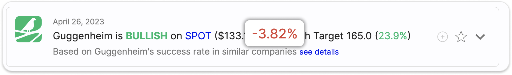
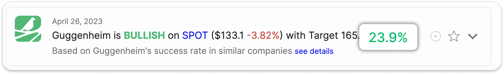

This screen presents an updated feed of curated analyst ratings
filtered by the parameters selected on the filter panel.
What are analyst ratings?
Analyst ratings are assessments and recommendations provided by
professional Wall Street analysts. They indicate whether an
analyst recommends buying, selling, or holding a particular stock.
Tipigo collects analyst data from multiple reliable sources and
presents only curated ratings from our selected analyst team.
Understanding the Live Feed:
The Live Feed allows you to stay up-to-date with real-time
investment opportunities based on the latest analyst ratings. By
utilizing our advanced filtering options, you can customize the
feed to align with your investment preferences and strategies.
Filter by sector, market cap, beta, and more to find opportunities
that suit your portfolio.
Analyst Track Record and Internal Score:
To gain deeper insights into why a specific rating is displayed
for an analyst, you can click on the 'See Details' option. This
will provide you with access to the analyst's track record and our
internally calculated score. It allows you to evaluate the
analyst's past performance and the reliability of their ratings.
Enhance Your Investment Portfolio:
Select the most relevant opportunities from the live stream to
enhance your investment portfolio. By leveraging the curated
analyst ratings and utilizing our powerful filtering capabilities,
you can make well-informed investment decisions aligned with your
investment goals.
In the next sections of this guide, we will provide further
details on how to effectively use the Live Feed and leverage the
valuable insights provided by our expert analyst team
BULLISH with green color

Or BEARISH with red color
Sector by symbol - press on the symbol to go to symbol
page

Last price by USD

Price change by percent on the last day

Target price in by USD

Target price in by percent
